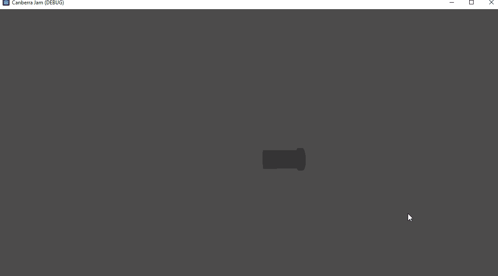
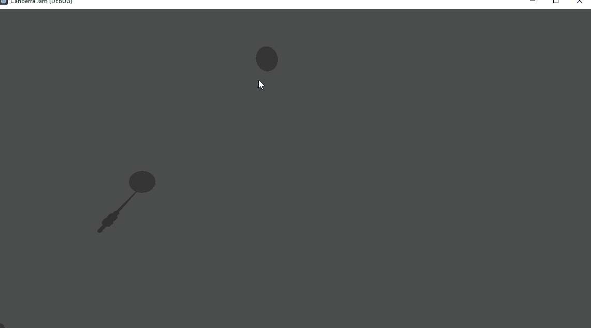

Odyssey of the Faceless Men
Intro
I think it is a good idea to write about my games. Writing in general feels like a good idea to me, for a number of vague reasons I guess.

This is Odyssey of the Faceless Men, the most recent game I’ve made. It was made for the CanDev 2024 game jam, which supposedly lasted 48 hours. To be honest I was not excited for this jam. Going in, I perhaps had the least amount of excitement I have had for a jam. Which sounds gloomy, but as it turns out jams are pretty fun, and I had a good time. The reason I was not excited was that this was not a normal jam. The theme for the jam was announced a month ahead of time, and the theme was “Put Canberra in your game in some way (if you want)”.
The previous themes for jams I have done were:
- Roll of the dice
- The end is near
- Roots
- Less is more
- Roles reversed
- Metroidvania
- Make me laugh (I had to search this up because I completely forgot)
- Summoning
I would say the theme this time is actually the worst of them all. You could argue “metroidvania” is worse because only serves to stifle creativity, but I think the inclusion of “(if you want)” is what puts it over the edge for me - because I don’t know, it feels like it is defeating the point of a game jam. The theme itself is admitting that it is weak, and you don’t have to follow it since you can do better.
To give some extra context to the jam, you are given 48 hours to do your game, spread out over a week using an honor system. At the end of the week there is an online event called “Pizza and Pixels”where people in Canberra (where I live btw) play your games and give feedback (there are no ratings). The intent is to promote the community, have fun, meet new people, etc. So the early theme reveal, lax theme, unusual timespan, and lack of ratings were because this jam did not have the same goal as most other jams I participated in; it needed to be as approachable as possible to maximise participation. In some ways I am still unsure about whether this approach met what I think its goals were.
- The early theme reveal removes the exciting element from the start of the jam.
- A vague theme/non-theme might sound like a good idea if you don’t think about it. A huge strength of game jams is that it rids you of decision paralysis. There are no longer infinite options, only a small subset, and you need to decide what you’re doing right now or you aren’t going to finish your game.
- The honor-system time period is both hit and miss for me. I think it is absolutely true that there would be less entries if not for this. But also we just felt no time pressure during the jam, which I think is definitely part of the excitement for myself, as I work well under pressure. I understand though that this isn’t true for everyone.
Also, despite being a Canberra jam, for the Canberra community, the jam was not hosted in Canberra. No, it was hosted online because “it’s too cold in Canberra”. I really just think this is silly; if you know me you have probably heard me whine about it recently. I don’t really believe in meeting people online - like I know it happens, but it doesn’t give you the same things, it doesn’t force you to be personal. It’s so easy for like a musician to enter your game jam discord, submit a song in #general after chatting a bit, and then dip without getting to know anyone (I am saying this from experience). Just having a person next to you makes it much easier to share ideas, chat, suffer together, etc.
Part 2
I’m splitting this up into a second part, because the first part is negative, and this is not a negative blog post! So we need to move past that. If I am to defend myself, I’m trying to write without planning, and without editing. I tend to over edit everything I write, and then never finish, so this is me rebelling against that I guess. While the game jam was conceptually not great, and I was compelled to write about that, I honestly had a great time. So let’s talk about what actually happened.
The jam technically started on a Friday, but since many of the team members work Friday we chose the weekend as our designated 48 hours. Even though the jam is “online”, we chose to do it in person, at Game Plus for reasons I have conveniently already complained about. I arrived at around 11am because I slept in. It worked out pretty well though, as I arrived right after Brian did, who I wanted to have around for the initial planning. Brian is a hobbyist game developer like me, I believe he also programs as a contractor as his day job. He has been doing this for a while (in the order of decades) so his skills are pretty well-rounded, eg he does programming, 3d art, animations, and music; he has a lot of tools that he uses for his games.
The original idea for the game was by Kyle, who wanted to make a game in the vein of Galaga or Galaxian, with Canberra’s iconic Telstra tower as the player. It was based on this poster by an artist named Trevor Dickinson, who has done a bunch of cool art of Canberra, as well as other Australian cities.

The previous night, Brian and I had discussed some ideas for the game. We couldn’t just remake Galaga, that would be boring. My suggestion was that we made the game melee focused, which seemed like a very simple change to the genre that would have a large impact on gameplay. My inspiration for this probably came from how janky the guns felt in Galaga; I’m sure it’s something you can get used to, but in essence it’s just moving left/right and spamming the fire button. I like games with snappy movement abilities, and melee weapons seemed like a good way to encourage this. And I already had a clear idea of how a melee weapon could work, as I was basically borrowing the attack from a weapon in Star of Providence. In hindsight, I think any sort of weapon upgrade from Galaga would have been as effective for the jam, though I think there is definitely potential for this kind of game if you really designed your enemies around melee combat. That said, the goofiness of the melee attack definitely contributed to the unseriousness of the game’s vibe.
Some other ideas included making your attack reflect bullets (I still think this would be cool), having a shield that reflects bullets, and having a grapple as a secondary ability. The reflect/grapple would give you a ranged option in case getting into melee range would be difficult (eg there is a crowd of enemies spamming bullets). Ultimately we solved the grouped enemies problem by allowing your melee to delete bullets; this was a bit of a cop-out as Star of Providence also does this, but it seemed like a good idea as it was very simple and we were targeting a casual audience.
As usual, the first thing I started writing code for was the player. Brian convinced me to make a 3D game because he wanted to make 3D art, so this was also more or less my first experience with making 3D games. Other than getting the player to face the right direction, creating a 3D character controller in 2D space was largely the same as what I was already used to. This was my first pass for the controller:

The original idea was that you would choose the direction you went in with WASD/Arrow keys. Eg, if you pressed left your character would face left. After I added the first enemy, I realised this was not a good idea; trying to dodge and attack at the same time was just too complicated. Since you were going to attack with the mouse anyway, it made a lot of sense to let you aim with the mouse.

Shortly after this point Kyle and Minty also arrived. Kyle